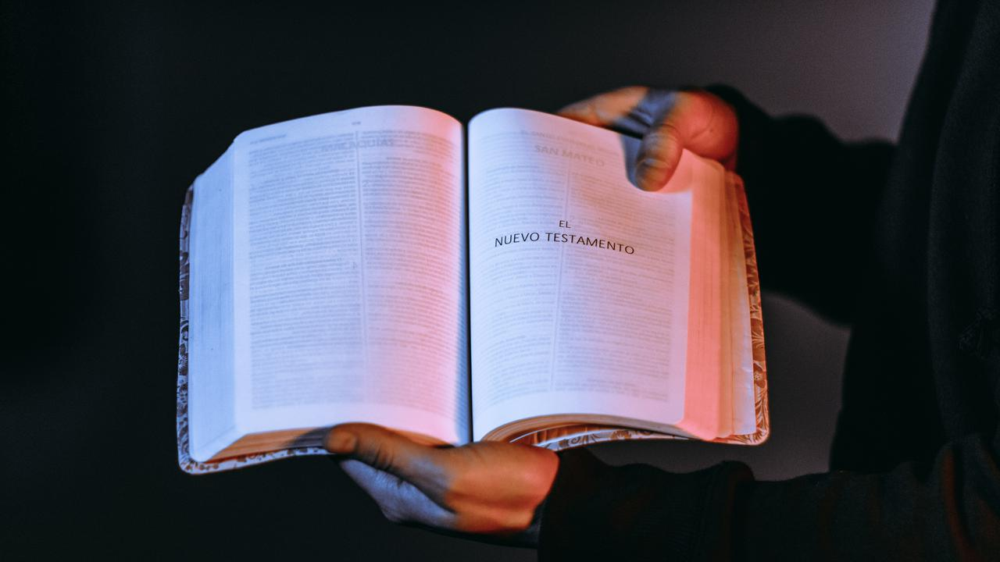

Quote Dari Internet

- "Memaafkan belum tentu membuat kita lebih baik atau bahkan merasa lebih baik, tetapi yang jelas membuka jalan kebaikan."- Eleanor Roosevelt
- "Rahasia dari kesuksesan kita adalah bahwa kita tidak pernah menyerah." - Ilma Mankiller
- "Kesuksesan dan kegagalan adalah sama-sama bagian dalam hidup. Keduanya hanyalah sementara." - Shah Rukh Khan
- "Yang keren itu bukan anak muda yang banyak gaya, tapi anak muda yang banyak karya."
- "Belajarlah rendah hati, rendahkan hatimu serendah-rendahnya hingga tidak ada seorangpun yang bisa merendahkanmu."
- "Jangan biarkan opini orang lain menenggelamkan suara dari dalam diri Anda." – Steve Jobs
- "Jika rencana Anda tidak berjalan, maka ganti rencana tersebut, jangan tujuannya." – Anonim
- "Hidup tak selamanya tentang pacar."
- "Kesepian terburuk adalah tidak nyaman dengan diri sendiri." -Mark Twain.
- "Secapek-capeknya kerja lebih capek nganggur." -Ernest Prakasa.
|